Title Cards in Clipchamp
How to create chapter cards in ClipChamp
Chapter cards are a great way to organize the content of your video and make it easier for viewers to navigate. This page will walk you through how to add chapter cards (otherwise known as title or information cards) to your videos using ClipChamp’s built-in tools.
Turn on Chapter Cards:
In the ClipChamp Player Page…
-
Navigate to the toolbar on the right side of the screen.
-
Click on “Video Settings.” A window appears with options for settings.
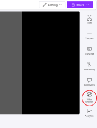
-
Turn on Chapters by clicking the switch to its right so that it is highlighted in purple. This prompts ClipChamp to automatically generate chapters for your video based on your transcript.
-
Note: A transcript must be generated in order to generate chapter cards. A step-by-step walkthrough of this process is available in the Closed Captions in Clipchamp section of this guide.
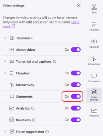
-
-
Navigate to the Chapters button on the right menu, which appears after turning the chapter setting on in Step 3. A window opens where you can edit each chapter card.
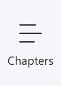
Adding and Editing Chapters:
-
Click New Chapter from the chapters window. A dialog box opens along with a small preview of the video and a drop-down menu where you can adjust timestamps.
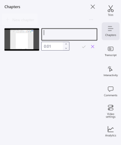
-
Place your cursor in the timestamp selector.
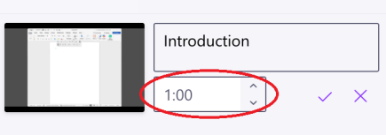
-
Type the time of the video at which you would like the chapter section to end. The video preview automatically jumps to this time, so you can easily see where the chapter is ending
-
Tip: You can use the arrows next to the box to increase or decrease the time by 0.01 seconds if adjustments are needed.
-
-
Place your cursor in the text dialogue box located directly above the timestamp selector.
-
Type what you want the name of your chapter to be.
-
Example: “Introduction”
-
-
Click the check mark symbol in the bottom right corner next to the timestamp selector to create your chapter.
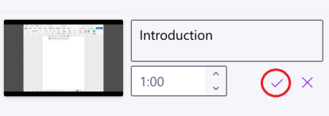
-
Repeat steps 1-6 as many times as needed based on the number of chapters you would like your video to have.
How to Create and Customize Title Cards
Create a title card in ClipChamp Editor
-
Click on Open editor. ClipChamp’s built-in editing software opens.
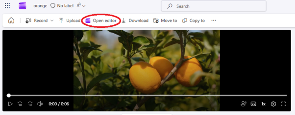
-
Click Text on the left side menu. Editor opens a menu you can scroll through with different text options, including text with different styles.
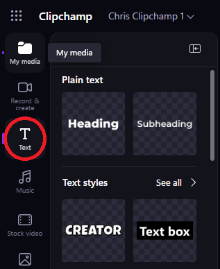
-
Select one option and drag it over to the timeline, above where you want it to appear in the video. A textbox appears in the preview and a colored block appears on the timeline. Optionally, click and drag one edge of the colored block to adjust how long the text appears in the video.
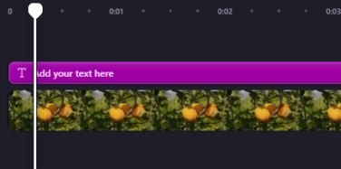
-
Click inside the text box in the preview.
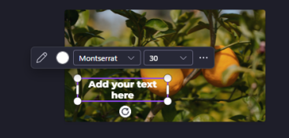
-
Type in whatever you want the text to say. Review your video to ensure the title card appears at the right moment and looks the way you want.
Change the font of the chapter card
-
Click on the title from the timeline. The text property menu opens on the right where you can customize the text.
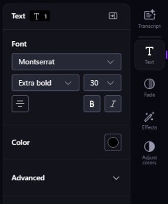
-
Click on the dropdown arrow beside the font name. A scrollable dropdown menu opens with different font choices, including headings, subheadings, and body text.
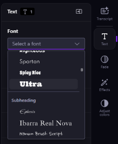
-
Select the desired font. The text will automatically change to the chosen font.
Adjust the alignment of the text
-
Open the text property menu.
-
Click on the alignment icon from the text property menu.
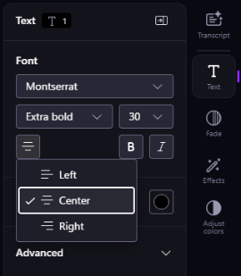
-
Select from the three options: Left, Center, or Right. The text within the box follows the alignment you choose.
Change the size of the text
-
Navigate to the preview and click on the text.
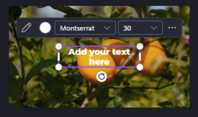
-
Click and drag the corners of the text box to adjust its size.
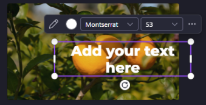
Change the color of the text
-
Navigate to the Color section of the text property menu. Depending on what text/text style you selected, the default color will be different.
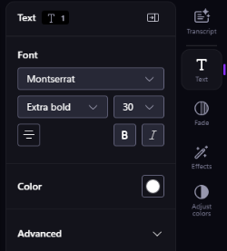
-
Click on the colored circle in the menu. Depending on the text/text style you selected, the color options offered will be different.
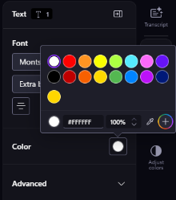
-
Click on the desired color or type in a HEX value. The text automatically changes to the color you choose
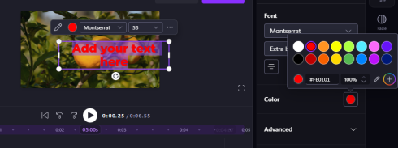